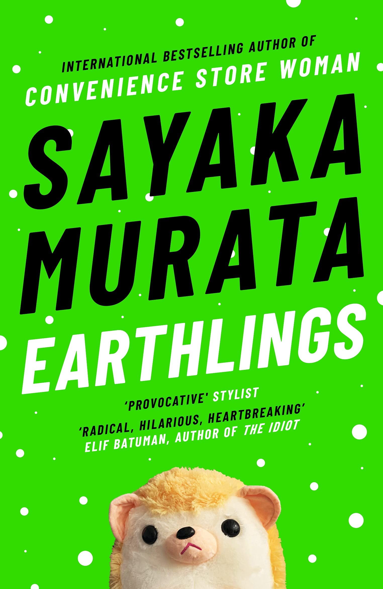
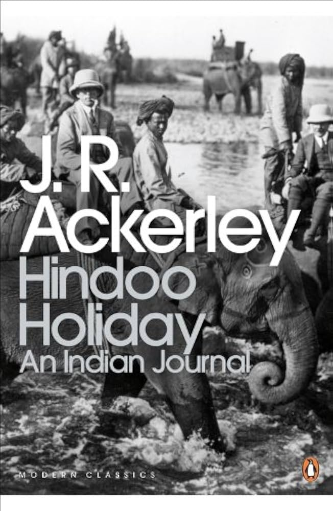
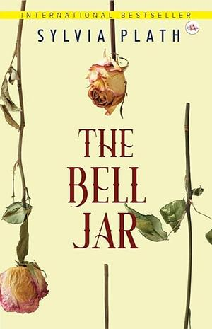
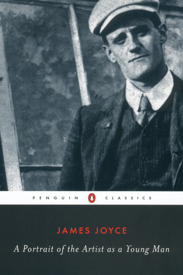
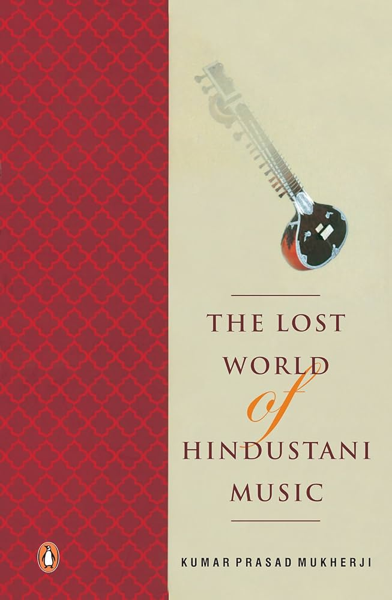

Books I have been reading in 2025
Something that made this year's book list markedly different is the amount of non-fiction in it, and the number of books written by Indian authors or books that are at least about India. The vast vast majority of books I have read are fiction (likely a 1000+), while I may not have read even a dozen non-fiction books.
Even before the start of the year, I was looking for fiction books written by Indian authors but I still haven't been able to find anything I really want to read. I have also, since November, been wanting to read 'Memoirs of a Rebel Princess', by Abida Sultaan but I have very frustratingly been unable to find a copy anywhere, not even a pirated one (except for one in the IIM-K library, which I have no way of accessing).
1. After Dark (アフターダーク)— Haruki Murakami

I sort of think that all Murakami books are meant to explore one emotion and this one is being chased or hunted. 'After Dark' is in the 'magical realism' genre which is one of my favourite genres. I like it because it means the stories are grounded in real struggles while at the same time the author is able to be cerative and use supernatural elements and the world around the characters to get across their point better without having to worry about being unrealistic. The books also sometimes have a dream-like or otherwordly quality to them.
I like Murakami books because of how creative they are and this one is a unique spin on Sleeping Beauty. It's a short fast-paced book which describes events taking place in a single night, capturing what Tokyo is like between dusk and dawn. Like a lot of other Murakami books, it explores sleep and dreams (and some other darker themes) and features a lot of music, but it also has some new topics like sisterhood. The ending was quite nice.
I enjoyed the book and it's quite nice as a standalone— however, it's not as good as my favourite book by Murakami; 'Colorless Tsukuru Tazaki and his Years of Pilgrimage' (色彩を持たない多崎つくると、彼の巡礼の年), and some aspects of After Dark even felt a little bit repetetive after having read Colorless...
On another note, I was watching 'Dark' recently (A German TV Show) and I couldn't help but think the disturbing Time-Travel Room in Dark is just like the one described in this book.
2. Emma— Jane Austen

Coincidentally, I happened to have watched 'Clueless' just a few days before picking up this book. I didn't realise Clueless was based on Emma until I had already read a good portion of it. Maybe I made some kind of subconscious connection between the main characters (I had some vague notion of what Emma was about) and that's why I chose to read it.
I really enjoyed Pride and Prejudice. This book was a little different— it was definitely an entertaining and fun book (the riddles!), and very progressive in many ways, but also a bit disappointing in a moral sense. I'm not sure that Emma's progress in terms of character development by the end of the book is actually progress— and I don't know if that's intentional from Jane Austen or not.
3. Earthlings— Sakaya Murata
4. Hindoo Holiday— J.R. Ackerley
5. October Junction— Divya Prakash Dubey

I read it to help with my Hindi learning, because it uses very simple language and I surprisingly found it very comprehensible. But aside from that, it is one of the worst books I have ever read...
The book has neither any substance nor is it at all entertaining. The plot and narrative are unimaginably bland and boring. Every character is the same; some sort of attempt to be cool and sarcastic/witty. Pages of filler that have nothing to do with the story, just the author trying to hit a word count— dialogue after dialogue of characters discussing travel plans and logistics interjected with random 'deep' monologues from the author that don't actually mean anything. It's not even like other bad books I have read where it at least felt like the author LIKES books and writing. It reads like something written by chatGPT.
I don't know how someone can have the energy to write SIX books like this. I think Divya Prakash Dubey was just doing his best to churn out some formulaic bestsellers (exactly like Chitra, one has to wonder if the character was based on himself). I completely fail to understand how this book became famous and WHY people like this; it's of course okay to not want to read 'literature' and to just want something fun to read, but this book doesn't even do that. There are much better options.
6. The Bell Jar— Sylvia Plath
7. The Song of the Magpie Robin— Zafar Futehally

Biography written by Zafar Futehally, a famous Indian Conservationalist and relative of Salim Ali. The book mentioned many places which were very familiar to me (Bombay National Historical Society, Raman Research Institute etc.) or places I had just recently visited (Sanjay Gandhi National Park), which I have never experienced before in a book. He was a major figure in most of the major conservation organisations in India, so it was a good overview of the history of conservation in India and also to get a perspective on conservation from someone on the 'inside'; he talks both about the science and politics involved.
Of course he was also a bird lover and, aside from the interesting facts he mentioned (which was made doubly enjoyable by actually being able to recognise these bird names through my interest in bird-watching), it was nice to hear about his approach to birding— more focused on enjoying seeing the same bird repeatedly and taking joy in observing their habits rather than chasing seeing as many species as possible. I am thinking of looking at some of the editions of the famous periodical he ran— 'Newsletter for Birdwatchers'.
I bought books 3, 4, 6, 7 (from this list) as well as Convenience Store Woman, another book by Sayaka Murata I had already read in a single trip to Blossoms (a book-store), so when I finished this book I was quite pleased that I had actually finished reading all of them.
8. A Portrait of the Artist as a Young Man— James Joyce
9. The Lost World of Hindustani Music— Kumar Prasad Mukherji
10. Musafir Cafe— Divya Prakash Dubey

See October Junction review
*Books are listed in the order I read them
Back to Main Page